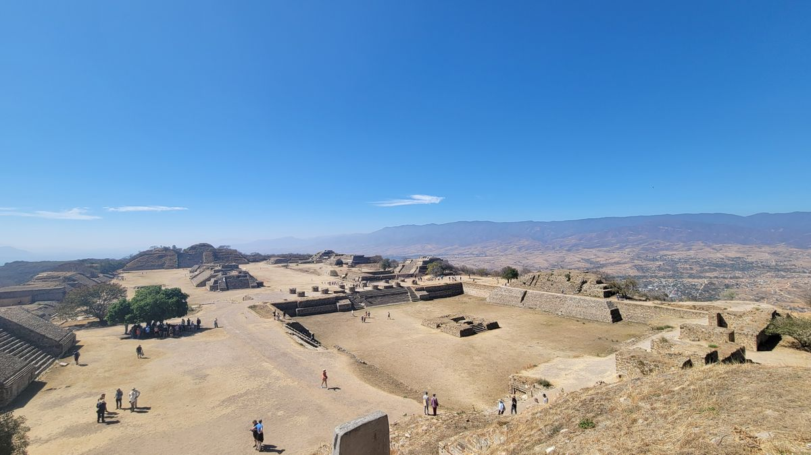
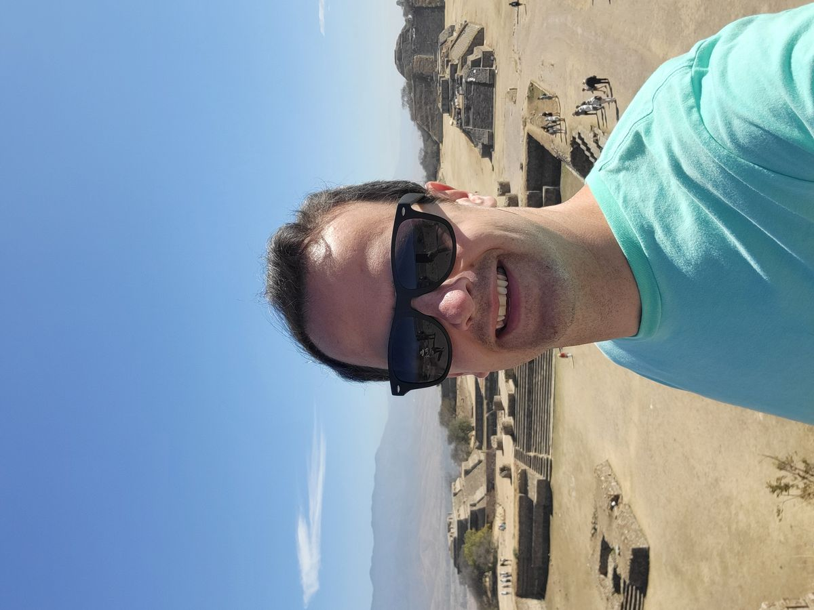
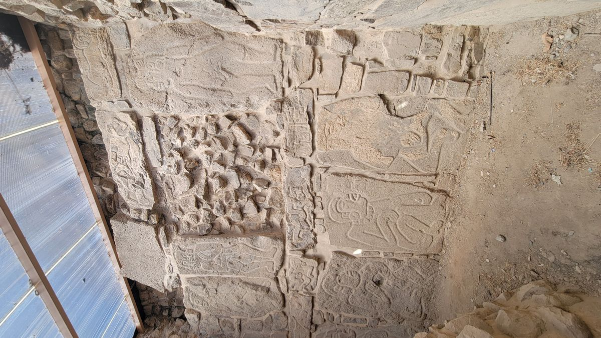
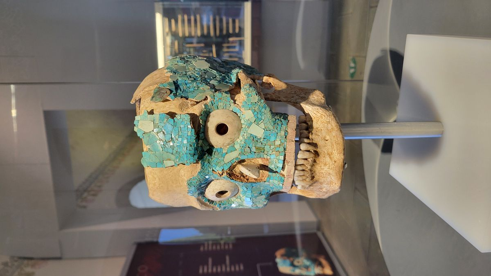
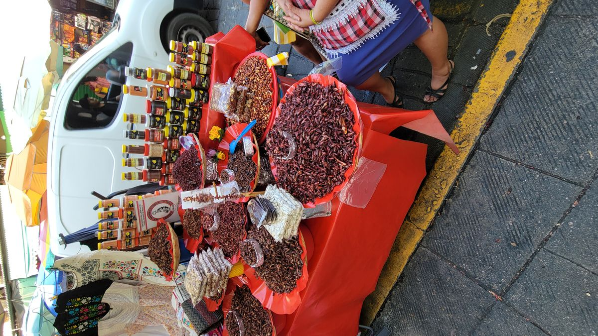
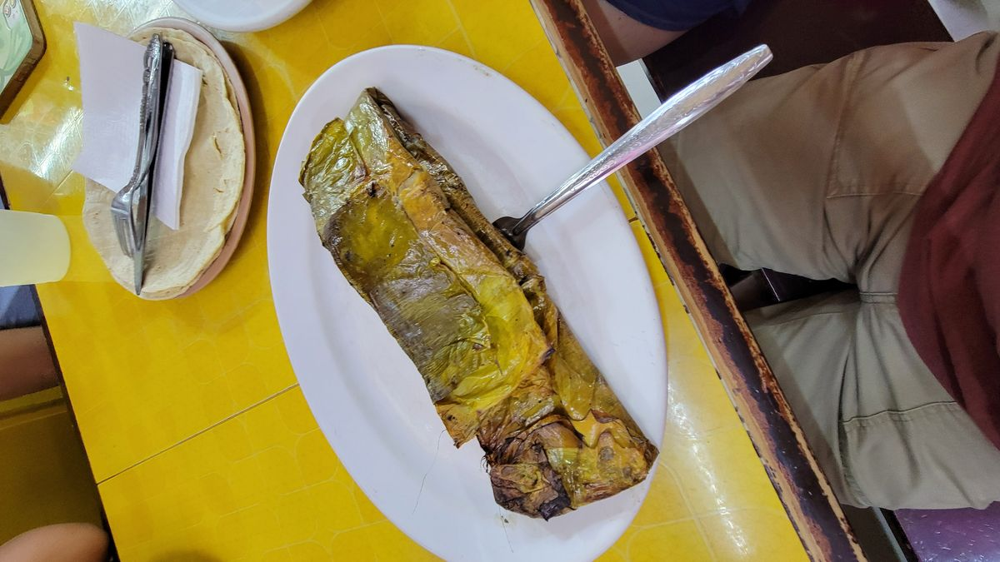
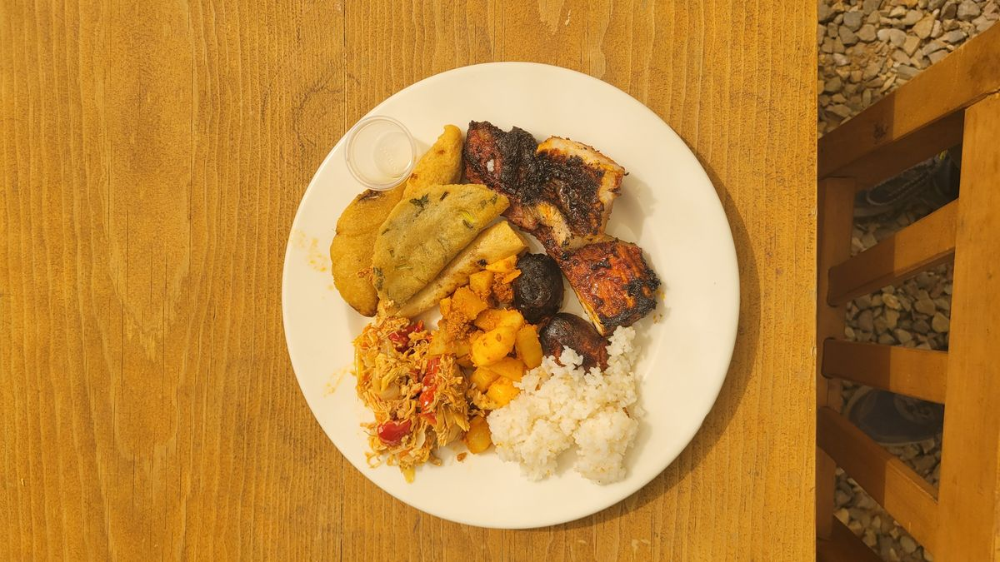

Oaxaca
I got sick in Oaxaca. I knew something was wrong my last few days in Mexico City. You know when you get that "spicy cough" that’s your first indication something is up. Then sneezing fits, runny nose and by the time I was walking from the bus station to my hostel in Oaxaca I had broken out into a sweat with no more exertion than I was used to. It was late and I was hoping a good night's rest would take care of it. I was wrong. I woke up in the morning covered in sweat and shivering even though it was over 80 degrees. I swallowed down some Ibuprofen and tried to choke down some breakfast a little later. A hour later it was in the toilet.
I was not keen on the idea of nursing a fever in a cheap Mexican hostel and as soon as my 2nd dose of Ibuprofen kicked in, I mustered up all the strength I could to pack my stuff and take a Taxi to a proper hotel where I checked in for a few days.
Getting sick while traveling is inevitable. Riding crowded trains and busses in some of the world’s largest cities. Street food. Hostels. None of which a Healthcare provider would recommend to someone trying to maintain optimal health. I had planned for something like this to happen, so it's not a trip killer. It is an inconvenience.
I hobbled to the closest Farmacia and picked up whatever the Mexican equivalent to NyQuil is and after 2 doses slept for at least 12 hours.
After 3 days of recuperating and Uber eats, I was ready to get back out there.
My sister had visited Oaxaca a few weeks before me on a much shorter trip than mine. Unfortunately, I couldn’t make use of many of her recommendations since my time there would be cut short. I just ended up splurging on a few group tours to make the most of my time and hit the must see’s for this place.
Mont Alban
Would be my 2nd set of pre-Colombian ruins, and not any less impressive. Built by the Zapotec people, you can’t help but fell a sense of awes as you sit among these sites admiring what these people accomplished thousands of years before us. These monuments would be hard to build today and they did so without machines, or even the wheel.




Oaxacan Food
Oaxacan food is unique even amongst Mexican cuisine. Blending the traditional Mexican food with indigenous flavors like Cacao, the food of the Oaxaca regions stands apart. I took an afternoon food tour, a local Oaxacan showed us her favorite food stalls inside the City Market. My personal favorites were the Prickly Pear nieve (ice cream) with scalded milk and the Mole tamale. I even tried a seasoned grasshopper. The legs got stuck in my teeth.



The best way to describe Oaxaca would be, touristy but not tacky. It had plenty of attractions to keep even the most curious traveler occupied for days. It’s used its notoriety in Mexican cuisine to build a bustling food culture of not just Mexican food, but world class restaurants off all cuisine. Getting sick might have just been a blessing in disguise as I now have an excise to return another time to better explore this beautiful city.